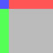
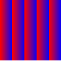
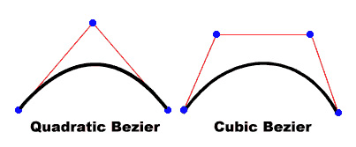

| Package | flash.display |
| Class | public final class Graphics |
| Inheritance | Graphics |
graphics property that is a Graphics object.
The following are among those helper functions provided for ease of use:
drawRect(), drawRoundRect(),
drawCircle(), and drawEllipse().
You cannot create a Graphics object directly from ActionScript code.
If you call new Graphics(), an exception is thrown.
The Graphics class is final; it cannot be subclassed.
| Method | Defined by | ||
|---|---|---|---|
|
beginBitmapFill(bitmap:BitmapData, matrix:Matrix = null, repeat:Boolean = true, smooth:Boolean = false):void
Fills a drawing area with a bitmap image.
| Graphics | ||
|
Specifies a simple one-color fill that subsequent calls to other
Graphics methods (such as lineTo() or drawCircle()) use when drawing.
| Graphics | ||
|
beginGradientFill(type:String, colors:Array, alphas:Array, ratios:Array, matrix:Matrix = null, spreadMethod:String = "pad", interpolationMethod:String = "rgb", focalPointRatio:Number = 0):void
Specifies a gradient fill that subsequent calls to other
Graphics methods (such as lineTo() or drawCircle()) use when drawing.
| Graphics | ||
|
Clears the graphics that were drawn to this Graphics object, and resets fill and
line style settings.
| Graphics | ||
|
Draws a curve using the current line style from the current drawing position
to (anchorX, anchorY) and using the control point that (controlX,
controlY) specifies.
| Graphics | ||
|
Draws a circle.
| Graphics | ||
|
Draws an ellipse.
| Graphics | ||
|
Draws a rectangle.
| Graphics | ||
|
drawRoundRect(x:Number, y:Number, width:Number, height:Number, ellipseWidth:Number, ellipseHeight:Number):void
Draws a rounded rectangle.
| Graphics | ||
|
Applies a fill to the lines and curves that were added since the last call to the
beginFill(), beginGradientFill(), or
beginBitmapFill() method.
| Graphics | ||
 |
Indicates whether an object has a specified property defined.
| Object | |
|
Indicates whether an instance of the Object class is in the prototype chain of the object specified
as the parameter.
| Object | |
|
lineGradientStyle(type:String, colors:Array, alphas:Array, ratios:Array, matrix:Matrix = null, spreadMethod:String = "pad", interpolationMethod:String = "rgb", focalPointRatio:Number = 0):void
Specifies a gradient for the line style that subsequent calls to other
Graphics methods (such as lineTo() or drawCircle()) use for drawing.
| Graphics | ||
|
lineStyle(thickness:Number, color:uint = 0, alpha:Number = 1.0, pixelHinting:Boolean = false, scaleMode:String = "normal", caps:String = null, joints:String = null, miterLimit:Number = 3):void
Specifies a line style that Flash uses for subsequent calls to other
Graphics methods (such as lineTo() or drawCircle()) for the object.
| Graphics | ||
|
Draws a line using the current line style from the current drawing position to (x, y);
the current drawing position is then set to (x, y).
| Graphics | ||
|
Moves the current drawing position to (x, y).
| Graphics | ||
|
Indicates whether the specified property exists and is enumerable.
| Object | |
|
Sets the availability of a dynamic property for loop operations.
| Object | |
|
Returns the string representation of the specified object.
| Object | |
|
Returns the primitive value of the specified object.
| Object | |
| beginBitmapFill | () | method |
public function beginBitmapFill(bitmap:BitmapData, matrix:Matrix = null, repeat:Boolean = true, smooth:Boolean = false):void
Fills a drawing area with a bitmap image. The bitmap can be repeated or tiled to fill
the area. The fill remains in effect until you call the beginFill(),
beginBitmapFill(), or beginGradientFill() method.
Calling the clear() method clears the fill.
The fill is not rendered until the endFill() method is
called.
Parameters
bitmap:BitmapData — A transparent or opaque bitmap image that contains the bits to be displayed.
|
|
matrix:Matrix (default = null)matrix = new flash.geom.Matrix(); matrix.rotate(Math.PI/4); |
|
repeat:Boolean (default = true)true, the bitmap image repeats in a tiled pattern. If
false, the bitmap image does not repeat, and the edges of the bitmap are
used for any fill area that extends beyond the bitmap.
For example, consider the following bitmap (a 20 x 20-pixel checkerboard pattern):
When
When  |
|
smooth:Boolean (default = false)false, upscaled bitmap images are rendered by using a
nearest-neighbor algorithm and look pixelated. If true, upscaled
bitmap images are rendered by using a bilinear algorithm. Rendering by using the nearest
neighbor algorithm is usually faster.
|
See also
| beginFill | () | method |
public function beginFill(color:uint, alpha:Number = 1.0):void
Specifies a simple one-color fill that subsequent calls to other
Graphics methods (such as lineTo() or drawCircle()) use when drawing.
The fill remains in effect until you call the beginFill(),
beginBitmapFill(), or beginGradientFill() method.
Calling the clear() method clears the fill.
The fill is not rendered until the endFill() method is
called.
Parameters
color:uint — The color of the fill (0xRRGGBB).
|
|
alpha:Number (default = 1.0) |
See also
| beginGradientFill | () | method |
public function beginGradientFill(type:String, colors:Array, alphas:Array, ratios:Array, matrix:Matrix = null, spreadMethod:String = "pad", interpolationMethod:String = "rgb", focalPointRatio:Number = 0):void
Specifies a gradient fill that subsequent calls to other
Graphics methods (such as lineTo() or drawCircle()) use when drawing.
The fill remains in effect until you call the beginFill(),
beginBitmapFill(), or beginGradientFill() method.
Calling the clear() method clears the fill.
The fill is not rendered until the endFill() method is
called.
Parameters
type:String — A value from the GradientType class that
specifies which gradient type to use: GradientType.LINEAR or
GradientType.RADIAL.
|
|||||||||
colors:Array — An array of RGB hexadecimal color values to be used in the gradient; for example,
red is 0xFF0000, blue is 0x0000FF, and so on. You can specify up to 15 colors.
For each color, be sure you specify a corresponding value in the alphas and ratios parameters.
|
|||||||||
alphas:Array — An array of alpha values for the corresponding colors in the colors array;
valid values are 0 to 1. If the value is less than 0, the default is 0. If the value is
greater than 1, the default is 1.
|
|||||||||
ratios:Array — An array of color distribution ratios; valid values are 0 to 255. This value
defines the percentage of the width where the color is sampled at 100%. The value 0 represents
the left-hand position in the gradient box, and 255 represents the right-hand position in the
gradient box.
Note: This value represents positions in the gradient box, not the
coordinate space of the final gradient, which might be wider or thinner than the gradient box.
Specify a value for each value in the For example, for a linear gradient that includes two colors, blue and green, the
following example illustrates the placement of the colors in the gradient based on different values
in the
The values in the array must increase sequentially; for example,
|
|||||||||
matrix:Matrix (default = null)createGradientBox() method, which lets you conveniently set up
the matrix for use with the beginGradientFill() method.
|
|||||||||
spreadMethod:String (default = "pad")SpreadMethod.PAD,
SpreadMethod.REFLECT, or SpreadMethod.REPEAT.
For example, consider a simple linear gradient between two colors: import flash.geom.* import flash.display.* var fillType:String = GradientType.LINEAR; var colors:Array = [0xFF0000, 0x0000FF]; var alphas:Array = [100, 100]; var ratios:Array = [0x00, 0xFF]; var matr:Matrix = new Matrix(); matr.createGradientBox(20, 20, 0, 0, 0); var spreadMethod:String = SpreadMethod.PAD; this.graphics.beginGradientFill(fillType, colors, alphas, ratios, matr, spreadMethod); this.graphics.drawRect(0,0,100,100); This example uses
If you use
If you use  |
|||||||||
interpolationMethod:String (default = "rgb")InterpolationMethod.linearRGB or
InterpolationMethod.RGB
For example, consider a simple linear gradient between two colors (with the
|
|||||||||
focalPointRatio:Number (default = 0)focalPointRatio set to 0.75:
|
ArgumentError — If the type parameter is not valid.
|
See also
| clear | () | method |
public function clear():void
Clears the graphics that were drawn to this Graphics object, and resets fill and line style settings.
| curveTo | () | method |
public function curveTo(controlX:Number, controlY:Number, anchorX:Number, anchorY:Number):void
Draws a curve using the current line style from the current drawing position
to (anchorX, anchorY) and using the control point that (controlX,
controlY) specifies. The current drawing position is then set to
(anchorX, anchorY). If the movie clip in which you are
drawing contains content created with the Flash drawing tools, calls to the
curveTo() method are drawn underneath this content. If you call the
curveTo() method before any calls to the moveTo() method,
the default of the current drawing position is (0, 0). If any of the parameters are
missing, this method fails and the current drawing position is not changed.
The curve drawn is a quadratic Bezier curve. Quadratic Bezier curves consist of two anchor points and one control point. The curve interpolates the two anchor points and curves toward the control point.

Parameters
controlX:Number — A number that specifies the horizontal position of the control
point relative to the registration point of the parent display object.
|
|
controlY:Number — A number that specifies the vertical position of the control
point relative to the registration point of the parent display object.
|
|
anchorX:Number — A number that specifies the horizontal position of the next anchor
point relative to the registration point of the parent display object.
|
|
anchorY:Number — A number that specifies the vertical position of the next anchor
point relative to the registration point of the parent display object.
|
| drawCircle | () | method |
public function drawCircle(x:Number, y:Number, radius:Number):void
Draws a circle. You must set the line style, fill, or both before
you call the drawCircle() method, by calling the linestyle(),
lineGradientStyle(), beginFill(), beginGradientFill(),
or beginBitmapFill() method.
Parameters
x:Number — The x location of the center of the circle relative to the
registration point of the parent display object (in pixels).
|
|
y:Number — The y location of the center of the circle relative to the
registration point of the parent display object (in pixels).
|
|
radius:Number — The radius of the circle (in pixels).
|
See also
| drawEllipse | () | method |
public function drawEllipse(x:Number, y:Number, width:Number, height:Number):void
Draws an ellipse. You must set the line style, fill, or both before
you call the drawEllipse() method, by calling the linestyle(),
lineGradientStyle(), beginFill(), beginGradientFill(),
or beginBitmapFill() method.
Parameters
x:Number — A number indicating the horizontal position relative to the
registration point of the parent display object (in pixels).
|
|
y:Number — A number indicating the vertical position relative to the
registration point of the parent display object (in pixels).
|
|
width:Number — The width of the ellipse (in pixels).
|
|
height:Number — The height of the ellipse (in pixels).
|
See also
| drawRect | () | method |
public function drawRect(x:Number, y:Number, width:Number, height:Number):void
Draws a rectangle. You must set the line style, fill, or both before
you call the drawRect() method, by calling the linestyle(),
lineGradientStyle(), beginFill(), beginGradientFill(),
or beginBitmapFill() method.
Parameters
x:Number — A number indicating the horizontal position relative to the
registration point of the parent display object (in pixels).
|
|
y:Number — A number indicating the vertical position relative to the
registration point of the parent display object (in pixels).
|
|
width:Number — The width of the rectangle (in pixels).
|
|
height:Number — The height of the rectangle (in pixels).
|
ArgumentError — If the width or height parameters
are not a number (Number.NaN).
|
See also
| drawRoundRect | () | method |
public function drawRoundRect(x:Number, y:Number, width:Number, height:Number, ellipseWidth:Number, ellipseHeight:Number):void
Draws a rounded rectangle. You must set the line style, fill, or both before
you call the drawRoundRect() method, by calling the linestyle(),
lineGradientStyle(), beginFill(), beginGradientFill(), or
beginBitmapFill() method.
Parameters
x:Number — A number indicating the horizontal position relative to the
registration point of the parent display object (in pixels).
|
|
y:Number — A number indicating the vertical position relative to the
registration point of the parent display object (in pixels).
|
|
width:Number — The width of the round rectangle (in pixels).
|
|
height:Number — The height of the round rectangle (in pixels).
|
|
ellipseWidth:Number — The width of the ellipse used to draw the rounded corners (in pixels).
|
|
ellipseHeight:Number — The height of the ellipse used to draw the rounded corners (in pixels).
Optional; if no value is specified, the default value matches that provided for the
ellipseWidth parameter.
|
ArgumentError — If the width, height, ellipseWidth
or ellipseHeight parameters are not a number (Number.NaN).
|
See also
| endFill | () | method |
public function endFill():void
Applies a fill to the lines and curves that were added since the last call to the
beginFill(), beginGradientFill(), or
beginBitmapFill() method. Flash uses the fill that was specified in the previous
call to the beginFill(), beginGradientFill(), or beginBitmapFill()
method. If the current drawing position does not equal the previous position specified in a
moveTo() method and a fill is defined, the path is closed with a line and then
filled.
See also
| lineGradientStyle | () | method |
public function lineGradientStyle(type:String, colors:Array, alphas:Array, ratios:Array, matrix:Matrix = null, spreadMethod:String = "pad", interpolationMethod:String = "rgb", focalPointRatio:Number = 0):void
Specifies a gradient for the line style that subsequent calls to other
Graphics methods (such as lineTo() or drawCircle()) use for drawing.
The line style remains in effect until you call the lineStyle() method or the
lineGradientStyle() method with different parameters. You can call the
lineGradientStyle() method in the middle of drawing a path to specify different
styles for different line segments within a path.
Call lineStyle() before you call
lineGradientStyle() to enable a stroke, otherwise the value of the line style
remains undefined.
Calls to clear() set the line style back to
undefined.
Parameters
type:String — A value from the GradientType class that
specifies which gradient type to use, either GradientType.LINEAR or GradientType.RADIAL.
|
|||||||||
colors:Array — An array of RGB hex color values to be used in the gradient (for example,
red is 0xFF0000, blue is 0x0000FF, and so on).
|
|||||||||
alphas:Array — An array of alpha values for the corresponding colors in the
colors array; valid values are 0 to 100. 0 is used if the value is less than 0. 100 is used if the value is greater than 100.
|
|||||||||
ratios:Array — An array of color distribution ratios; valid values are from 0 to 255. This value
defines the percentage of the width where the color is sampled at 100%. The value 0 represents
the left-hand position in the gradient box, and 255 represents the right-hand position in the
gradient box. This value represents positions in the gradient box, not the
coordinate space of the final gradient, which might be wider or thinner than the gradient box.
Specify a value for each value in the colors parameter.
For example, for a linear gradient that includes two colors, blue and green, the
following figure illustrates the placement of the colors in the gradient based on different values
in the
The values in the array must increase, sequentially; for example,
|
|||||||||
matrix:Matrix (default = null)createGradientBox() method, which lets you conveniently set up
the matrix for use with the lineGradientStyle() method.
|
|||||||||
spreadMethod:String (default = "pad")
|
|||||||||
interpolationMethod:String (default = "rgb")spreadMethod
parameter set to SpreadMethod.REFLECT). The different interpolation methods affect
the appearance as follows:
|
|||||||||
focalPointRatio:Number (default = 0)focalPointRatio of -0.75:
|
See also
| lineStyle | () | method |
public function lineStyle(thickness:Number, color:uint = 0, alpha:Number = 1.0, pixelHinting:Boolean = false, scaleMode:String = "normal", caps:String = null, joints:String = null, miterLimit:Number = 3):void
Specifies a line style that Flash uses for subsequent calls to other
Graphics methods (such as lineTo() or drawCircle()) for the object.
The line style remains in effect until you call the lineGradientStyle()
method or the lineStyle() method with different parameters.
You can call lineStyle() in the middle of drawing a path to specify different
styles for different line segments within the path.
Note: Calls to the clear() method set the line style back to
undefined.
Parameters
thickness:Number — An integer that indicates the thickness of the line in
points; valid values are 0 to 255. If a number is not specified, or if the
parameter is undefined, a line is not drawn. If a value of less than 0 is passed,
the default is 0. The value 0 indicates hairline thickness; the maximum thickness
is 255. If a value greater than 255 is passed, the default is 255.
|
|||||||||||
color:uint (default = 0) |
|||||||||||
alpha:Number (default = 1.0) |
|||||||||||
pixelHinting:Boolean (default = false)pixelHinting set to true, line widths are adjusted
to full pixel widths. With pixelHinting set to false, disjoints can
appear for curves and straight lines. For example, the following illustrations show how
Flash Player or the Adobe Integrated Runtime (AIR) renders two rounded rectangles that are identical, except that the
pixelHinting parameter used in the lineStyle() method is set
differently (the images are scaled by 200%, to emphasize the difference):
If a value is not supplied, the line does not use pixel hinting. |
|||||||||||
scaleMode:String (default = "normal")
|
|||||||||||
caps:String (default = null)CapsStyle.NONE, CapsStyle.ROUND, and CapsStyle.SQUARE.
If a value is not indicated, Flash uses round caps.
For example, the following illustrations show the different
|
|||||||||||
joints:String (default = null)JointStyle.BEVEL, JointStyle.MITER, and JointStyle.ROUND.
If a value is not indicated, Flash uses round joints.
For example, the following illustrations show the different Note: For |
|||||||||||
miterLimit:Number (default = 3)jointStyle
is set to "miter". The
miterLimit value represents the length that a miter can extend beyond the point
at which the lines meet to form a joint. The value expresses a factor of the line
thickness. For example, with a miterLimit factor of 2.5 and a
thickness of 10 pixels, the miter is cut off at 25 pixels.
For example, consider the following angled lines, each drawn with a
Notice that a given
|
See also
| lineTo | () | method |
public function lineTo(x:Number, y:Number):void
Draws a line using the current line style from the current drawing position to (x, y);
the current drawing position is then set to (x, y).
If the display object in which you are drawing contains content that was created with
the Flash drawing tools, calls to the lineTo() method are drawn underneath the content. If
you call lineTo() before any calls to the moveTo() method, the
default position for the current drawing is (0, 0). If any of the parameters are missing, this
method fails and the current drawing position is not changed.
Parameters
x:Number — A number that indicates the horizontal position relative to the
registration point of the parent display object (in pixels).
|
|
y:Number — A number that indicates the vertical position relative to the
registration point of the parent display object (in pixels).
|
| moveTo | () | method |
public function moveTo(x:Number, y:Number):void
Moves the current drawing position to (x, y). If any of the parameters
are missing, this method fails and the current drawing position is not changed.
Parameters
x:Number — A number that indicates the horizontal position relative to the
registration point of the parent display object (in pixels).
|
|
y:Number — A number that indicates the vertical position relative to the
registration point of the parent display object (in pixels).
|
size property for later use in determining the size of each shape.
package {
import flash.display.DisplayObject;
import flash.display.Graphics;
import flash.display.Shape;
import flash.display.Sprite;
public class GraphicsExample extends Sprite {
private var size:uint = 80;
private var bgColor:uint = 0xFFCC00;
private var borderColor:uint = 0x666666;
private var borderSize:uint = 0;
private var cornerRadius:uint = 9;
private var gutter:uint = 5;
public function GraphicsExample() {
doDrawCircle();
doDrawRoundRect();
doDrawRect();
refreshLayout();
}
private function refreshLayout():void {
var ln:uint = numChildren;
var child:DisplayObject;
var lastChild:DisplayObject = getChildAt(0);
lastChild.x = gutter;
lastChild.y = gutter;
for (var i:uint = 1; i < ln; i++) {
child = getChildAt(i);
child.x = gutter + lastChild.x + lastChild.width;
child.y = gutter;
lastChild = child;
}
}
private function doDrawCircle():void {
var child:Shape = new Shape();
var halfSize:uint = Math.round(size / 2);
child.graphics.beginFill(bgColor);
child.graphics.lineStyle(borderSize, borderColor);
child.graphics.drawCircle(halfSize, halfSize, halfSize);
child.graphics.endFill();
addChild(child);
}
private function doDrawRoundRect():void {
var child:Shape = new Shape();
child.graphics.beginFill(bgColor);
child.graphics.lineStyle(borderSize, borderColor);
child.graphics.drawRoundRect(0, 0, size, size, cornerRadius);
child.graphics.endFill();
addChild(child);
}
private function doDrawRect():void {
var child:Shape = new Shape();
child.graphics.beginFill(bgColor);
child.graphics.lineStyle(borderSize, borderColor);
child.graphics.drawRect(0, 0, size, size);
child.graphics.endFill();
addChild(child);
}
}
} Hide Inherited Public Properties
Hide Inherited Public Properties Show Inherited Public Properties
Show Inherited Public Properties